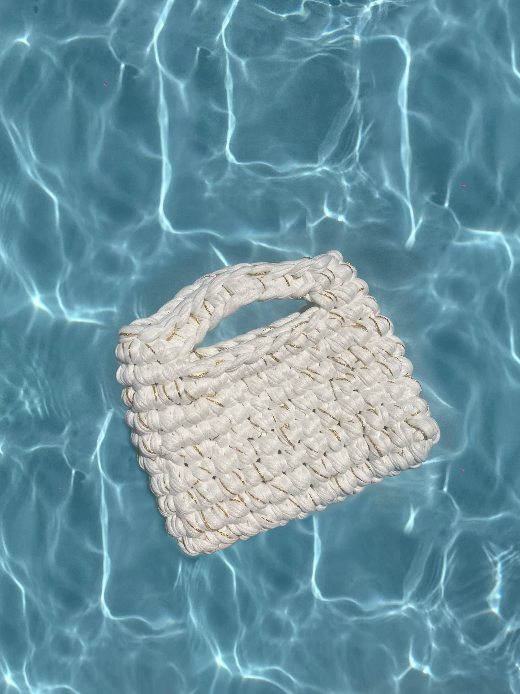
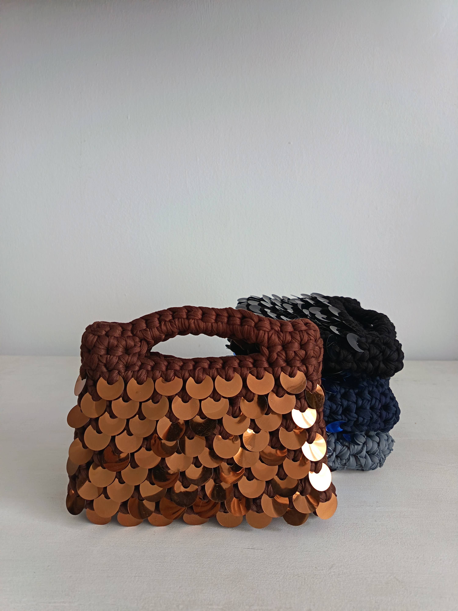
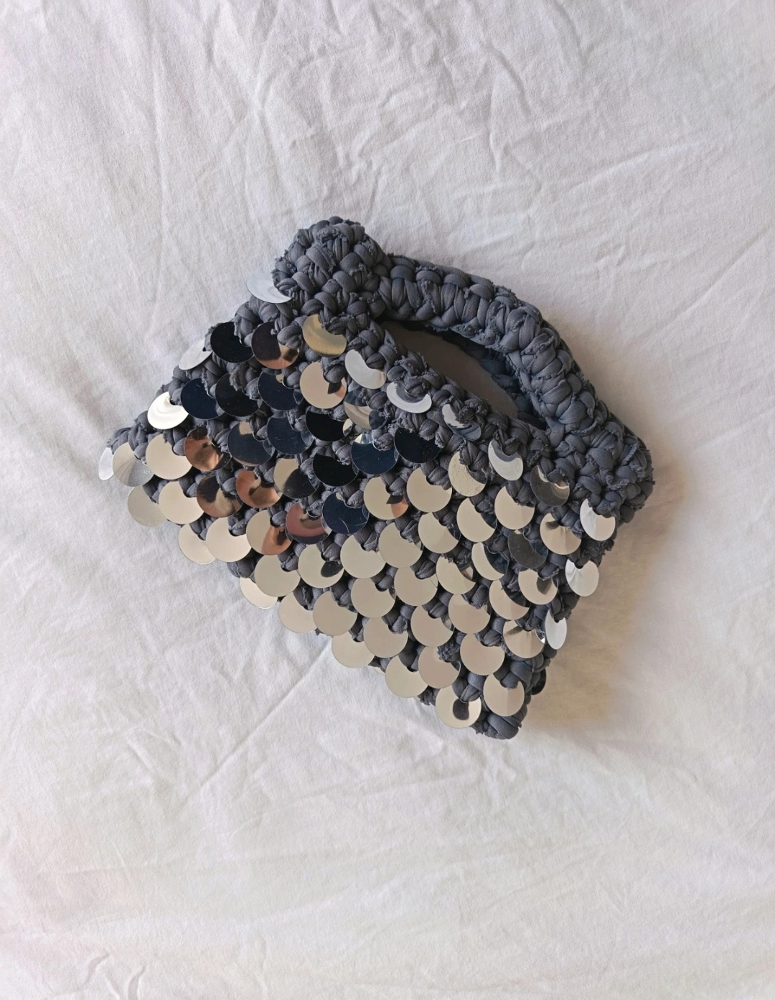
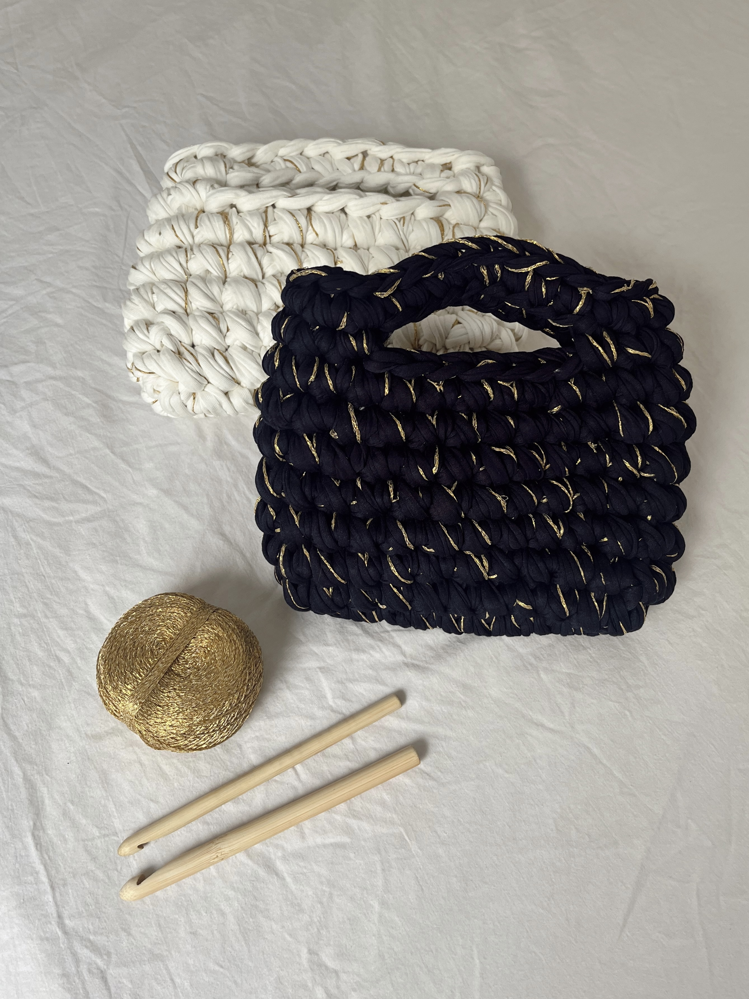
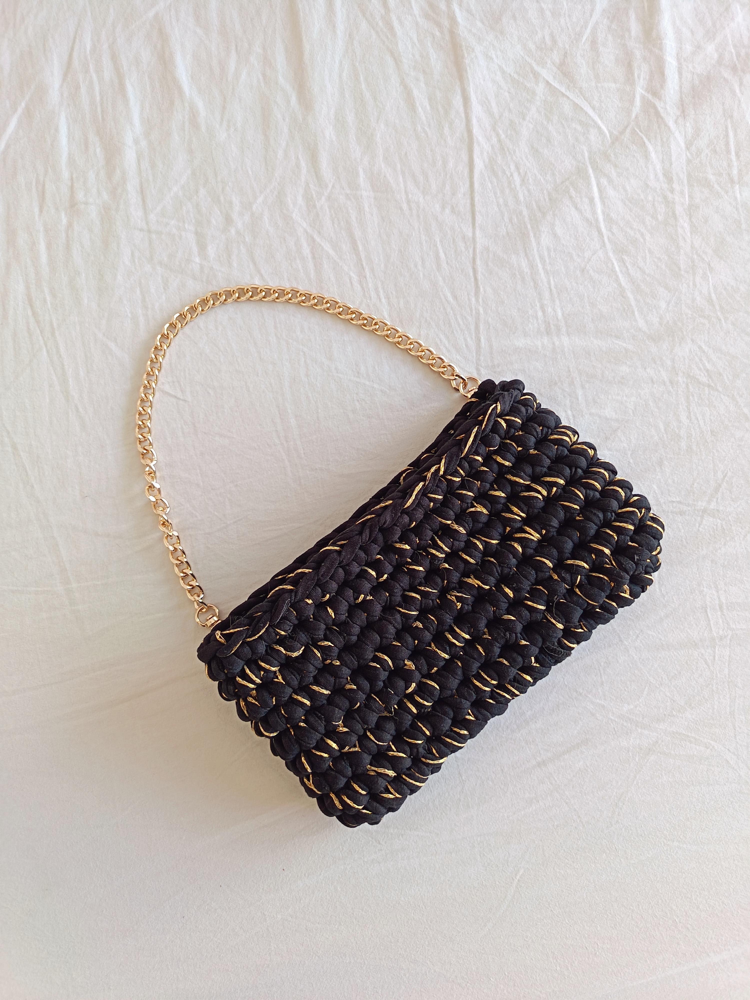

"Liée Sacs: elegancia y comodidad en un bolso único."


Bolsos
Descubre nuestros modelos destacados:

Adoreé Gris
Adorée · 30€
El bolso Adorée es un bolso de mano diseñado para aportar luminosidad y sofisticación a cualquier look. Su acabado con lentejuelas lo convierte en la pieza ideal para eventos, celebraciones y ocasiones especiales.
Cada modelo está tejido artesanalmente bajo encargo, haciendo de cada bolso una creación única. Consulta las opciones de colores disponibles y personaliza tu diseño según tu estilo.
Puedes añadir una cadena extraíble de acero inoxidable en acabado dorado o plateado por 5 € adicionales.

Éclat Marrón
Liée Éclat · 26€
El bolso Liée Éclat Éclat combina diseño artesanal y versatilidad en un bolso pensado para acompañarte a diario. Su silueta atemporal lo convierte en un complemento fácil de combinar, elevando cualquier conjunto con un toque elegante.
Disponible en acabado de un solo color o con detalle de hilo brillante dorado o plateado para un efecto más especial.
Todos nuestros modelos están tejidos a mano bajo encargo. Consulta las opciones de colores disponibles y personaliza tu pieza.
Puedes añadir una cadena extraíble de acero inoxidable en acabado dorado o plateado por 5 € adicionales.
Bijou Marrón
Bijou · 34€
El bolso de hombro Bijou Ha sido diseñado para para destacar. Su acabado con lentejuelas aporta brillo y sofisticación, convirtiéndolo en el complemento perfecto para eventos, cenas y celebraciones especiales.
Cada bolso se confecciona artesanalmente bajo pedido. Consulta los colores disponibles y elige la cadena extraíble de acero inoxidable en acabado dorado o plateado para personalizar tu diseño.

Nuit Negro
Nuit · 29€
El bolso Nuit está diseñado para quienes buscan un accesorio versátil con un estilo elegante y minimalista. Perfecto para el día a día, su diseño combina fácilmente con diferentes looks y ocasiones.
Disponible en versión monocromática o con detalle de hilo brillante dorado o plateado para aportar un toque distintivo.
Todos nuestros modelos están tejidos a mano bajo encargo. Consulta las opciones de colores disponibles y personaliza tu bolso eligiendo una cadena extraíble de acero inoxidable en acabado dorado o plateado.
Personalización disponible: 2 colores.
Accesorios
Personaliza tu pieza con una cadena extraíble de 100 cm, diseñada para aportar versatilidad.
Disponible en tonalidad dorada o plateada, este complemento permite transformar fácilmente tu bolso según la ocasión, combinando funcionalidad y elegancia.
Compatible con los modelos Éclat y Adorée.
Material: Acero inoxidable
Longitud: 100 cm
Acabados: Dorado / Plateado
Precio: +5 €
Flor
Correa Éclat · 8€
Sobre Liée Sacs
Liée Sacs nace del deseo de crear bolsos únicos combinando elegancia, delicadeza y comodidad. Cada pieza es cuidadosamente diseñada y elaborada a mano en Barcelona, utilizando materiales cuidadosamente seleccionados para garantizar calidad, durabilidad y estilo. Nuestros bolsos de crochet son 100% hechos a mano y se confeccionan bajo pedido. El proceso de creación requiere entre 1 y 2 semanas.